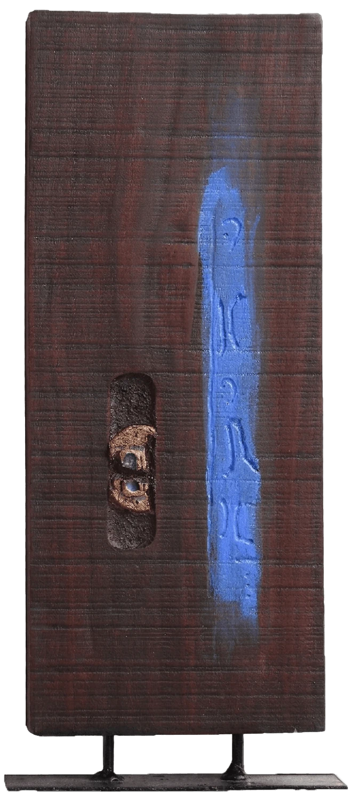
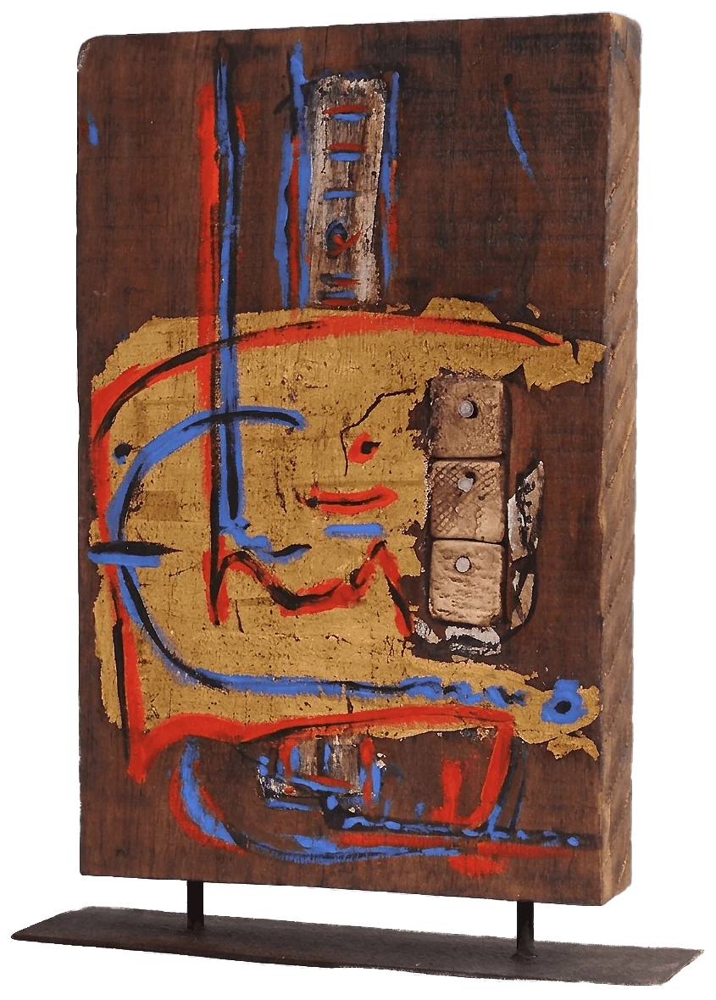
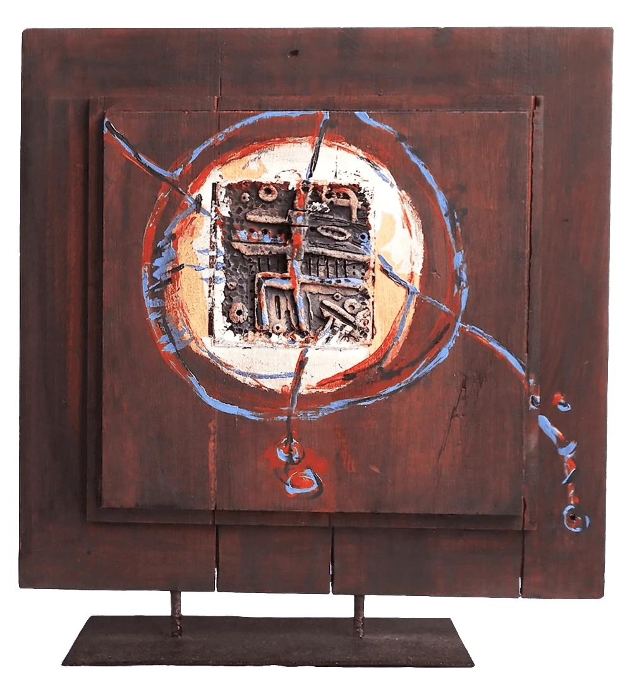
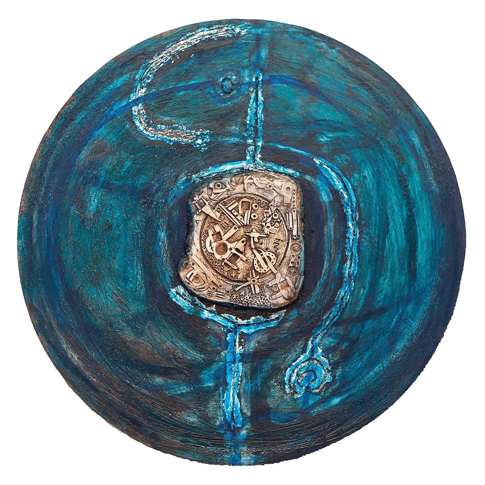
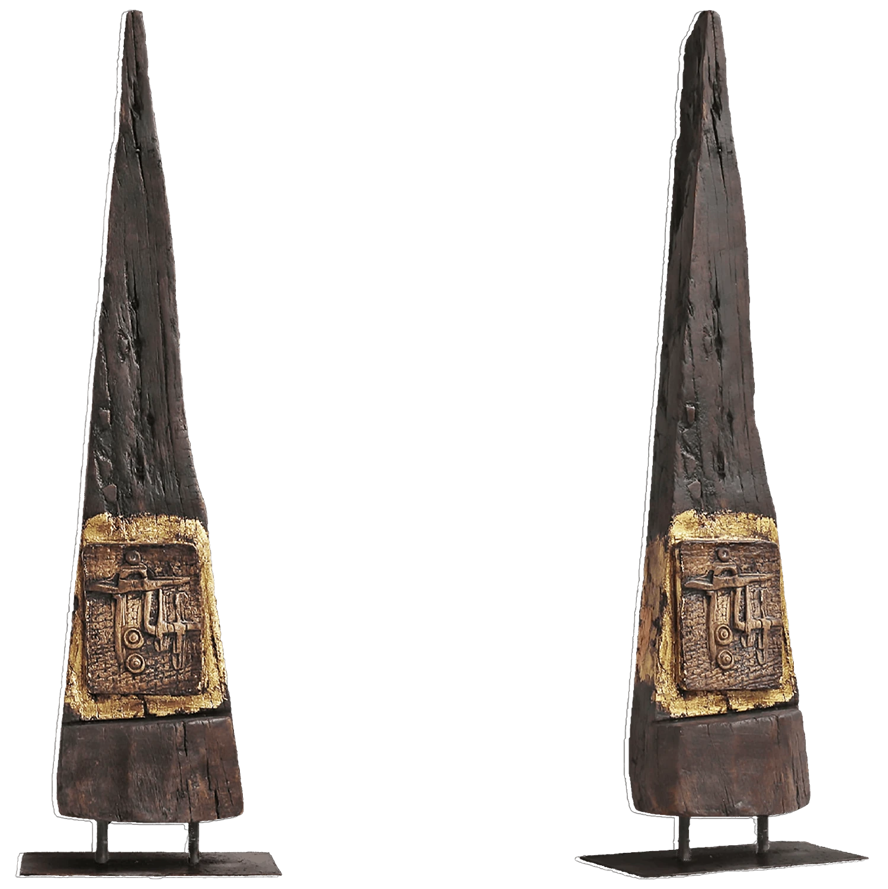
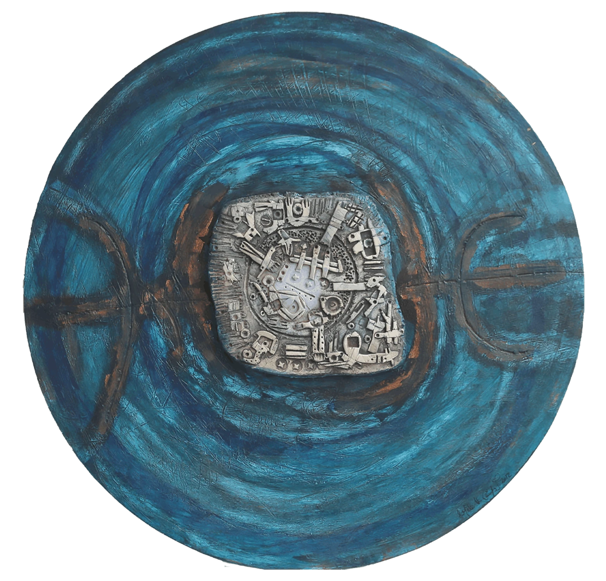
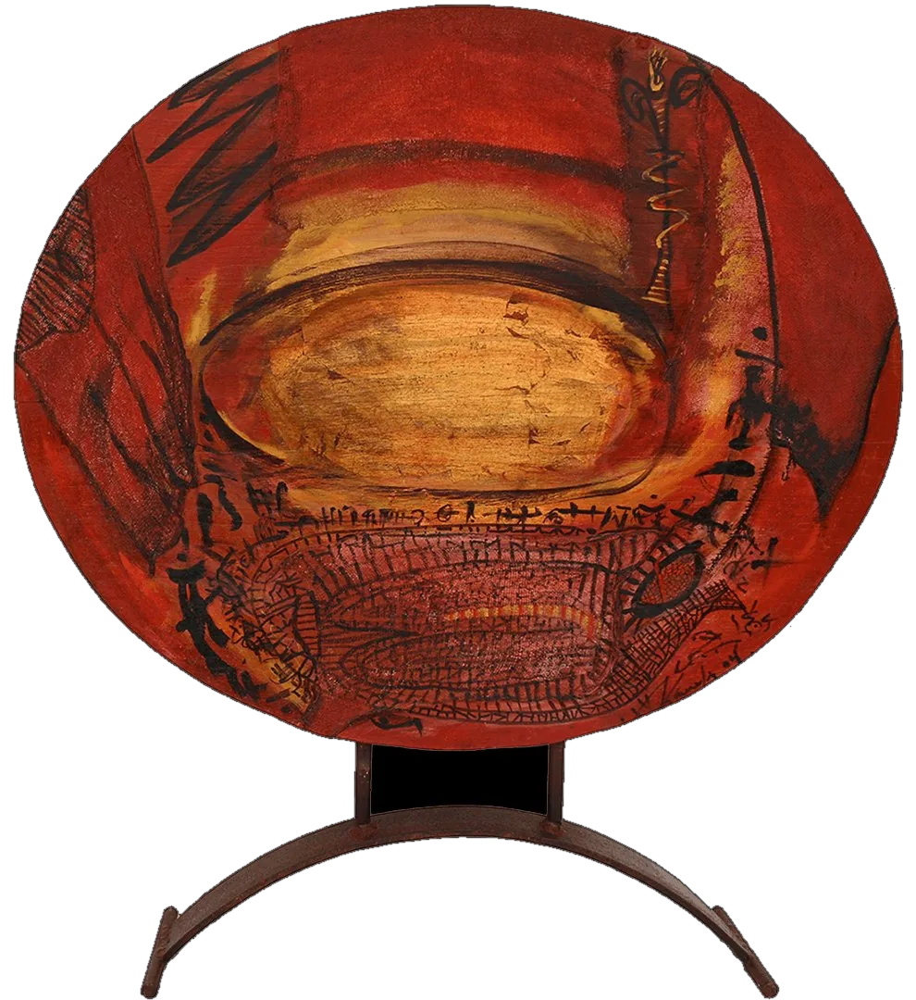
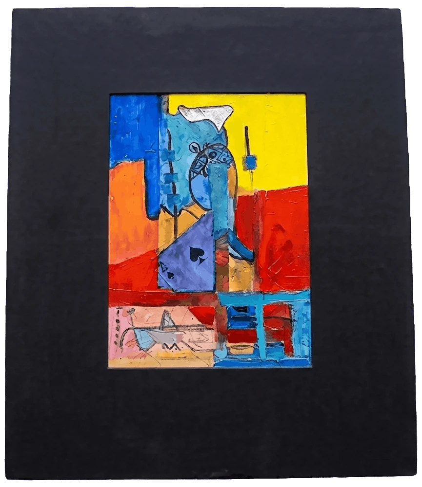

Skulpturen –
Materie im Wandel
Meine Skulpturen entstehen aus der Begegnung von Material und Erinnerung – aus Holz, Steinzeug, Keramik und Blattgold. Ihre Oberflächen tragen Spuren der Zeit und erzählen von Veränderung und Verwandlung.
Jedes Werk folgt einer eigenen abstrakten Bildsprache, die aus der Stille und dem genauen Hinsehen wächst: mythische Zeichen, organische Formen, eine leise, beinahe kalligrafische Handschrift, die nichts erklären will, sondern etwas in uns anklingen lässt.
Jede Skulptur ist ein Unikat, entstanden in meinen Ateliers in Caracas, Teneriffa und Berlin.

Totem 'Blue Line' Skulptur
aus der Totem-Serie
Mixed Media auf Holz
Größe: 33 × 19 × 4 cm
Jahr: 2004
Mixed Media auf Holz
Größe: 33 × 19 × 4 cm
Jahr: 2004

Totem Series II Skulptur
aus der Totem-Serie
Mixed Media auf Holz, mit Blattgold
Größe: 32,5 × 19,5 × 4,5 cm
Jahr: 2004
Mixed Media auf Holz, mit Blattgold
Größe: 32,5 × 19,5 × 4,5 cm
Jahr: 2004

Gazeta Lunar – Lunar Gazette
Skulptur, doppelseitig
Mixed Media auf Holz, mit Blattgold, auf Metallsockel
Größe: 35,5 × 34 cm mit Metallsockel
Jahr: 2005
Mixed Media auf Holz, mit Blattgold, auf Metallsockel
Größe: 35,5 × 34 cm mit Metallsockel
Jahr: 2005

Silencios que sobreviven I –
Silences That Endure Wandskulptur
Mixed Media: Holz, Steinzeug, Kupfer
Durchmesser: 51 cm · Stärke: 2 cm
Jahr: 2007
Mixed Media: Holz, Steinzeug, Kupfer
Durchmesser: 51 cm · Stärke: 2 cm
Jahr: 2007

Pendulum Skulptur auf Metallsockel
Mixed Media: Holz, Steinzeug und Blattgold
Größe: 60 × 17 × 5 cm
Jahr: 2006
Mixed Media: Holz, Steinzeug und Blattgold
Größe: 60 × 17 × 5 cm
Jahr: 2006

Silencios que sobreviven II –
Silences That Endure Wandskulptur
Mixed Media: Holz, Steinzeug
Durchmesser: 51 cm · Stärke: 2 cm
Jahr: 2007
Mixed Media: Holz, Steinzeug
Durchmesser: 51 cm · Stärke: 2 cm
Jahr: 2007

Totem Sculpture
Doppelseitig
Mixed Media: Holz, Steinzeug, Blattgold
Größe: 25,5 × 17,2 × 6,5 cm
Jahr: 2007
Mixed Media: Holz, Steinzeug, Blattgold
Größe: 25,5 × 17,2 × 6,5 cm
Jahr: 2007

Circunvolción II – Convolution
Freistehende Skulptur, doppelseitig
Mixed Media: Holz mit Blattgold
Größe: 55 × 46 × 2,5 cm
Höhe mit Metallsockel: 60 cm · Gewicht: ca. 5 kg
Jahr: 2006
Mixed Media: Holz mit Blattgold
Größe: 55 × 46 × 2,5 cm
Höhe mit Metallsockel: 60 cm · Gewicht: ca. 5 kg
Jahr: 2006

Barajas – Decks of Cards
Malerei auf Holz, Mixed Media
Bild: 21 × 15 cm
Mit Holzrahmen: 36,5 × 31 cm
Jahr: 2009
Bild: 21 × 15 cm
Mit Holzrahmen: 36,5 × 31 cm
Jahr: 2009